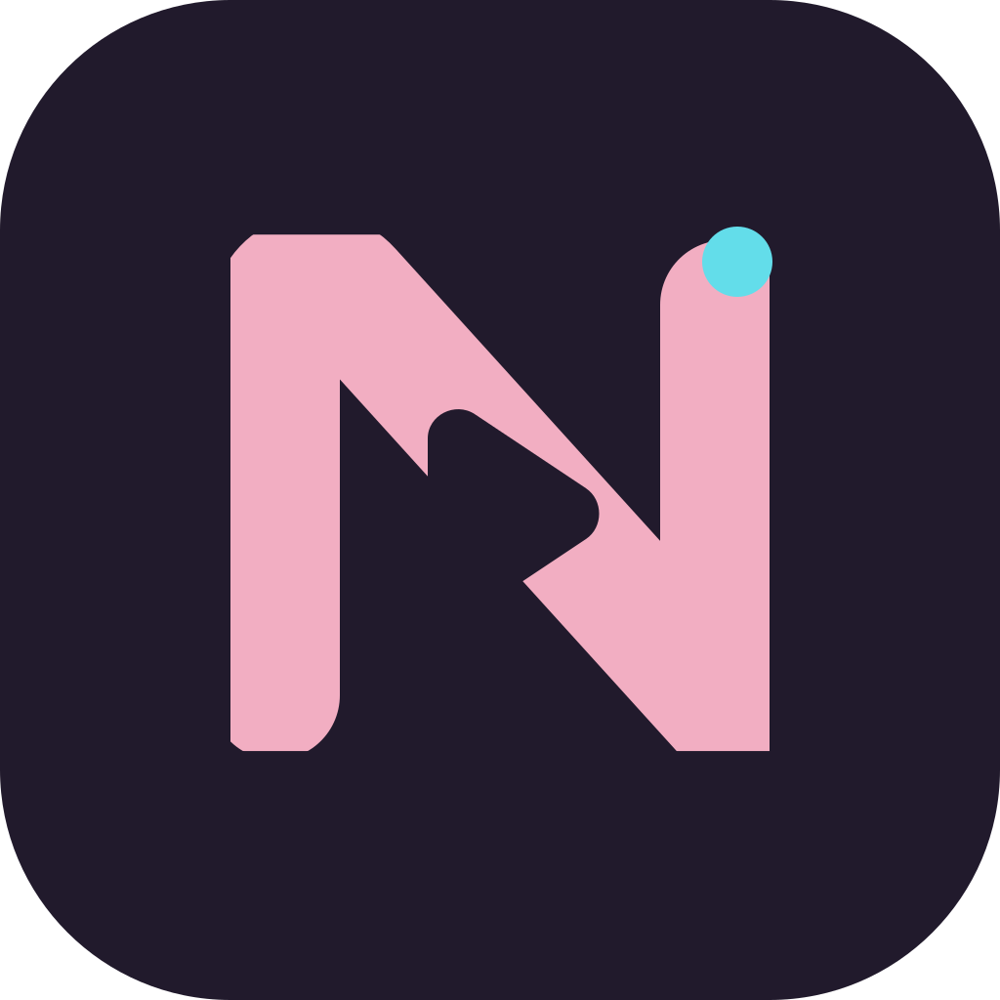

LATEST RELEASE

Newbili MD
v1.2.0 · Build 25
展开与合拢，保留连续的观看体验。
Android 12 及以上ARM64 · 24.4 MB
官网直链下载.apk推荐大多数 Android 手机、平板使用。

v1.2.0 · Build 25
展开与合拢，保留连续的观看体验。
推荐大多数 Android 手机、平板使用。
沿用原 MD 测试版的包名与签名，可以直接覆盖升级。安装前无需卸载；账号、设置和缓存会保留。预览版仍在持续完善。
SHA-256 用来确认下载文件完整、与发布版本一致。
2d6e1038d1e1f6c84010b573ef3eafc06c102101e86e4a59d3e009ab28729643719977ab767fb4d653d2201a4e300cfa4380508e843509b9de784ada25ac5b40f698fec3a5532fb18899fbbc8eaa5ab6b1d0d1cf36ed2e8529b7d10221313938THE DETAILS MAKE THE DIFFERENCE.
更新日志看得见的变化，用得上的改进。
v1.2.0 · Build 25
Android · iOS 同步更新展开双栏、书本触控区与桌面观看，围绕真实折叠区域调整。
Duo 原生桥接已启用；iOS 27.1 Duo 模拟器已验证书本、桌面、全屏、展开和合拢外屏保持同一播放器与解码器。真机功耗、帧时间与系统分屏仍待验收。IPA 需要自行签名。
v1.2.0 · Build 24
v1.2.0 · Build 23
v1.2.0 · Build 22
v1.1.1 · Build 21
Android · iOS 同步更新修复播放连续性，让评论、图片与字幕自然衔接。
两端共享本次修复；iOS / iPadOS 安装包需要自行签名。
v1.1.0 · Build 19
Android · iOS 同步更新手机、平板与折叠屏，共享这一轮缓存、可靠性与细节动效改进。
iOS 预览 1
需自行签名共享 Material Design 页面与播放器。iPhone、iPad 模拟器已验证真实推荐、搜索、播放，以及大屏右侧评论卡片。
v1.1.0 · Build 17
Android 预览Newbili 的 MD 版本正式成为独立项目。保留原有功能与历史，继续完善 Material Design 的手感。
v1.0.13
独立前版本v1.0.12
独立前版本v1.0.11
独立前版本主按钮直接下载官网域名上的 APK，无需先打开 GitHub 发布页。备用入口提供相同文件，SHA-256 一致。中国大陆各网络的连接情况可能不同，目前未接入国内 CDN，不能保证所有地区都能直连。
可以。沿用原测试渠道签名与包名，可以覆盖旧 MD 测试版。请不要先卸载。如果设备提示签名不一致，先确认旧安装包的来源，避免卸载导致本地数据丢失。
请先检查系统为 Android 12 或以上，以及安装包架构是否适合设备。普通手机和平板通常选择 ARM64；x86_64 适用于对应架构的设备与模拟器。
已恢复迁移，并提供需要自行签名的 iOS / iPadOS 预览 IPA。iPhone 与 iPad 模拟器已验证核心播放流程，系统画中画和真机验收仍在继续。安装说明与验证记录 ↗ · 官网下载未签名 IPA